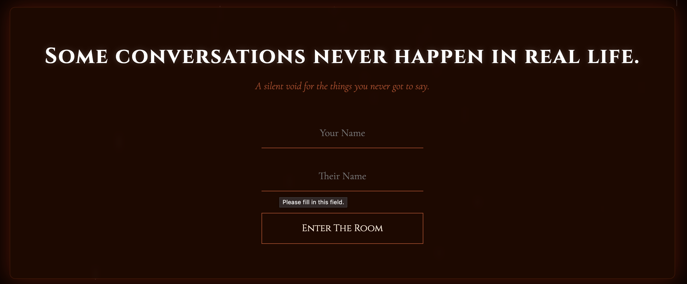
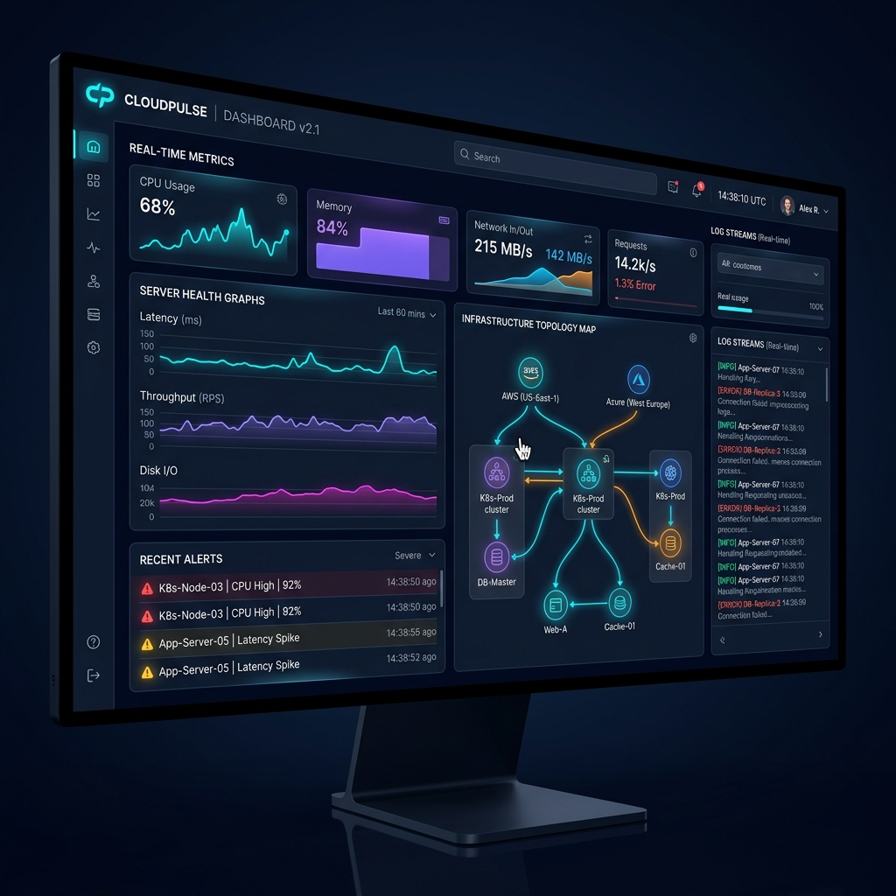

👋 Hello, I'm
Building scalable cloud infrastructure, CI/CD pipelines, automation systems, and exploring emerging AI Technologies.
DevOps Engineer with 5 years of experience delivering cloud-native solutions and automating software delivery processes.
Experienced in AWS Cloud, CI/CD pipeline development, containerization, Kubernetes orchestration, and Infrastructure as Code.
Adept at improving deployment reliability, system performance, and operational efficiency through automation and modern DevOps practices.
Strong communication and collaboration skills with experience working in multicultural and global teams, supporting mission-critical applications and digital transformation initiatives.
Worked across multiple enterprise client projects focusing on cloud infrastructure, CI/CD automation, deployment pipelines and monitoring solutions.

Anonymous emotional sharing platform with room-based real-time interaction.
Cloud Subnet Pro: An IP Address Calculator designed for ease of use by network engineers and cloud professionals.

Real-time monitoring dashboard for cloud infrastructure, metrics and logs.
Open for collaborations, opportunities and innovative projects. Feel free to reach out!